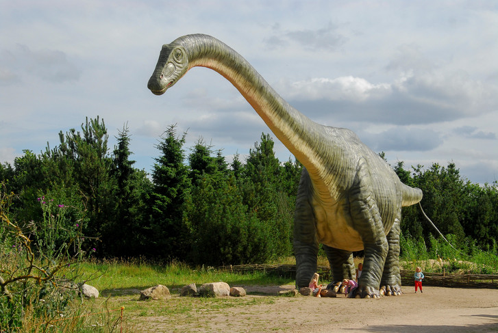
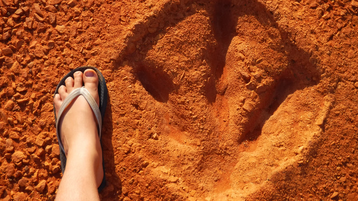
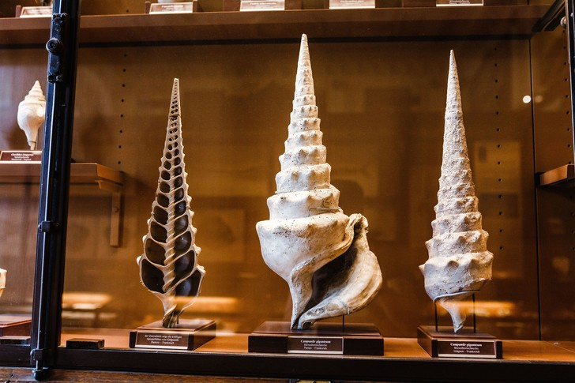
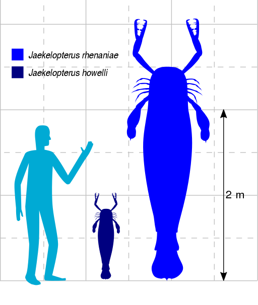

3 гиганта, обитавших на Земле миллионы лет назад
Зубастый левиафан
Киты, судя по всему, появились 5–10 млн лет назад, так что они не могли соседствовать с динозаврами,
вымершими за 50 млн лет до того, зато делили морские глубины с недошедшими до нас видами китообразных.
Некоторые из них были не менее впечатляющими и опасными, чем динозавры.
Так, примерно в то же время в морях нашей с вами планеты обитали, скажем, 15-метровые зубастые киты,
получившие название мелвиллова левиафана (Livyathan melvillei — в честь автора «Моби Дика»
Германа Мелвилла), обладавшие, похоже, самыми большими зубами среди позвоночных. Найденные зубы этих китов
достигают в длину 36 см, а в диаметре — 12 см. Кого же ел мелвиллов левиафан своими длинными зубами? Скорее
всего, других морских млекопитающих, в том числе китов.
Сухопутные громадины
Самыми большими существами, когда-либо обитавшими на суше, считаются населявшие континенты Земли 210–66 млн лет назад завроподы (Sauropoda) — обширная группа четвероногих растительноядных динозавров с массивным телом, длинной шеей и маленькой головой. Как считают ученые, они были далеким потомками еще более древних мелких динозавроморфов, весивших считаные килограммы, но со временем превратились в огромных существ.

Так, диплодоки, жившие 157–145 млн лет назад в Северной Америки имели длину около 30 метров и массу от 10 до
80 тонн (если длину мы можем определить довольно точно по хорошо сохранившимся практически полным скелетам,
то показатели массы тела — сплошь оценки).
И они не были самыми крупными! По мнению
палеонтологов, их родственники аргентинозавры — по крайней мере,отдельные особи, например бывший владелец
позвонка длиной 1,59 метра, обнаруженного в Аргентине, — могли достигать длины 40 метров и имели массу более
60 тонн.
Почему древние животные были таким большими?
У науки нет окончательного ответа на этот вопрос. Одна из версий ученых звучит четко и просто: потому что могли. В распоряжении травоядных динозавров было, по-видимому, много растительности. Они ее поедали и увеличивались в размерах; хищные динозавры, которые на них охотились, были вынуждены расти в тех же пропорциях, иначе как убить огромную добычу?
Другая версия состоит в том, что динозаврам было удобнее быть огромными. Для переваривания жесткой растительной пищи нужен длинный желудочно-кишечный тракт. Чтобы доставать до кроны деревьев (куда еще не добрались конкуренты), нужно иметь шею подлиннее и рост повыше. Чтобы дольше сохранять тепло по ночам, если вы холоднокровное существо, нужно иметь тело побольше. Если вы большой, на вас мало кто решится напасть (а чтобы решиться напасть на что-то большое, нужно и самому быть побольше). И так далее и тому подобное.
Чемпион среди моллюсков
Некоторые современные млекопитающие могут соперничать с крупными динозаврами в размерах, зато нынешним моллюскам и ракообразным до современников и предшественников динозавров далеко. Те были просто загляденье. Так, изящные раковины живших в эоцене (56–40 млн лет назад) моллюсков Campanile giganteum, найденные на территории Франции, достигают в длину 40–60 см.
Крупнейшие же членистоногие, когда-либо обитавшие на Земле, населяли отмели в устьях рек в раннем девоне — примерно 410 млн лет назад. Это были покрытие панцирем и вооруженные мощными хелицерами (клешнями) хищные ракоскорпионы вида Jaekelopterus rhenaniae. Их длина заметно превышала рост человека.
